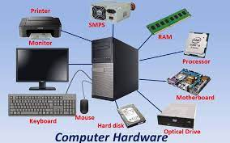

Saida mak la hanesan entre servisu ne'ebé jere ona.
No Hardware hanesan servisu ida?

Hardware hatudu iha leten funsaun katak, wainhira ita hakarak uza ita tenki (tu’u/sok) ba’a iha cpu komputador no mos ita bele kaer ho ita nia liman,
wainhira ita tu’u//sok mak foin bele hetn koneksaun entr hardware ne’ebe ita tu’u/sok ba’a iha hardware CPU komputador funsaun ida ne’e mak ita hanaran (hardware).
PROCESSOR
.jpg)
Iha komputador sempre iha hadware (processor), nia finsaun katak sai hanesan kakutak ba’a pc/komputador,hodi monitorin ou kontrola data ne’ebe iha komputador no mos iha mundu rekonhese katak processor komputador/ laptop iha modely rua (2) AMD & INTEL
MEMORI(RAM)
.jpg)
Memory sai hanesan liafuan konhesidus bain-bain ita sempre koalia no rona ,maibe Ita sempre koalia no roan maibe ita seidauk hatene nia funsaun memory, memory nia funsaun hodi rai data ne’ebe processor halo processu ona iha komputador ezemplu hanesan ketik office word, ne’e funsaun katak processor mak halo procesu maibe memory mak save/rai data,e data ne’ebe ita hahu halo iha office word ita tenki save antes tamba wainhira komputador hetan failansu ruma ,komputador restart, ita nia data sei’a lakon tamba processor aloka tia oan ba’a iha memory.
CASING
.jpg)
Casing hanesan um ba komputador ne’ebe mak komesa husi Motherboard,power supply, hardisk,Ram no seluk tan. Tan iha casing mak bele protégé komponente hotu-hotu ne’ebe mak iha CPU nia laran
MOTHERBOARD
.jpg)
Motherboard hanesan inan ba komponente hotu ka bele dehan mainboard.hanesan inan ba komponente sira mak hanesan processor,VA Card, Ram,heatsink,sound card,hardisk no seluk selik tan. Motherboard iha tipu oin-oin ne’ebe mak iha merkadoria. Ba kada tipu maotheboard ne’ebe iha baseia ba tipu processor ne’ebe iha.
VGA CARD
.jpg)
VGS card hanesan komponen te komputador ida ne’ebe mak ho nia funsaun atu fo sai iha monitor.VGA iha tipu rua ,VGA onboard,signifika katak fo naran ona ba motherboard no VGA adisional ho funaun mos hanesan. Se wainhira computer nia performasce VGA ho Ram ne’ebe mak nia kinergia boot liu sei lais liu wainhira atu fo sai gafiku ho resolution boot.
POWER SUPPLAY
.jpg)
power supply komponente ida ne’e ho nia funsaun atu fo energia eletrika ba komponente seluk hanesan motherboard ,HDD DVD-ROOM
HARDISK
.jpg)
Hardisk hanesan komponente komputador utilija atu rai data permanente ,iha unidade ba hardisk atu rai ita mak BYTE, hardisk ne’eb mak agara fomous liu iha area merkadoria ho nia kapasidade husi 250GB too 3 terabyie.
.jpg)
ETI DILI
OBRIGADO/A BARAK BA ITA BO'OT SIRA NIA ATENSAUN I ADEUS